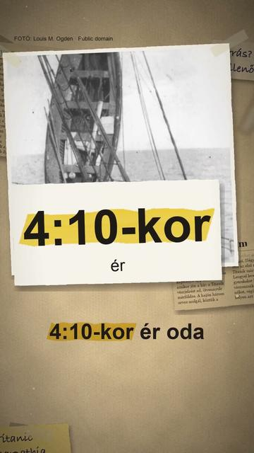

Megnézem a YouTube-onEgy magyar orvos látta el a Titanic túlélőit?
Röviden: Igen, de nem egyedül. Lengyel Árpád egyike volt a Carpathia három orvosának, és a harmadosztályú ebédlőt kapta.
Egy magyar orvos látta el a Titanic túlélőit? 1912-ben, éjjel fél egy után a Carpathia kapitánya, Arthur Rostron épp lefeküdt, amikor jött a hír: a Titanic vészjelzést ad, 58 mérföldre. A hajón három orvos szolgált: egy angol, egy olasz és a 26 éves Lengyel Árpád. 4:10-kor ért oda az első mentőcsónak; a Titanic addigra elsüllyedt. Lengyel levele szerint előbb a gyerekeket húzták fel vászonzsákban, aztán a nőket, végül a férfiakat; a túlélők létrán másztak fel, vagy kötélen húzták fel őket. Sok helyen azt olvasni, hogy ő mentette meg a túlélőket. Nem egyedül: Rostron írásos parancsa a három orvost osztályonként egy-egy ebédlőbe osztotta; Lengyelé a harmadosztályú volt. Egy volt azok közül, akik azon a hajnalon a Carpathián dolgoztak.
Források
- Amerikai szenátusi vizsgálat, Arthur Rostron vallomása (1912)
- Amerikai szenátusi vizsgálat, Arthur Rostron vallomása, 2. rész (1912)
- Híd 2017/6, 96–104. o. (Lengyel Árpád levele, Völgyi–Balogh 2012 nyomán)
- Múlt-kor: Aki a Titanic utasait mentette (2012. 04. 13.)
- Wikipédia: Lengyel Árpád (orvos)
- Wikipedia: RMS Carpathia
10 forrásra visszavezetett állítás · 6 forrás · utoljára ellenőrizve: 2026. október 28. · Hogyan ellenőrzünk?
Hibát találtál? Írd meg nekünk, megnézzük.
Képek és kreditek
Ez a videó a felhasznált CC BY-SA képek miatt CC BY-SA 4.0 licenc alatt érhető el (https://creativecommons.org/licenses/by-sa/4.0/).
• a Titanic kifut Southamptonból, 1912. április 10. – Francis Godolphin Osbourne Stuart, Public domain (https://creativecommons.org/publicdomain/mark/1.0/) https://commons.wikimedia.org/?curid=2990792
• a Carpathia a New York-i 54-es mólónál, 1912 – Bain News Service, Public domain (https://creativecommons.org/publicdomain/mark/1.0/) https://commons.wikimedia.org/?curid=37044705
• Arthur H. Rostron, a Carpathia kapitánya, 1912 – ismeretlen szerző, Public domain (https://creativecommons.org/publicdomain/mark/1.0/) https://commons.wikimedia.org/?curid=44126494
• a Titanic 12-es mentőcsónakja a Carpathia mellett, 1912. április 15. – Louis M. Ogden, Public domain (https://creativecommons.org/publicdomain/mark/1.0/) https://commons.wikimedia.org/?curid=6377009
• Titanic-túlélők a Carpathia fedélzetén, 1912 – Bain News Service, Public domain (https://creativecommons.org/publicdomain/mark/1.0/) https://commons.wikimedia.org/?curid=66679720
• Titanic-mentőcsónakok a Carpathián, 1912 – The New York Times, Public domain (https://creativecommons.org/publicdomain/mark/1.0/) https://commons.wikimedia.org/?curid=52706416
• Titanic-túlélők csoportja a Carpathián, 1912 – Library of Congress, PPOC, Public domain (https://creativecommons.org/publicdomain/mark/1.0/) https://commons.wikimedia.org/?curid=68104464
• a pilismaróti Lengyel Árpád-emlékmű Titanic-táblája (kivágott acéllemez) – Globetrotter19, CC BY-SA 4.0 (https://creativecommons.org/licenses/by-sa/4.0/) https://commons.wikimedia.org/?curid=156008059